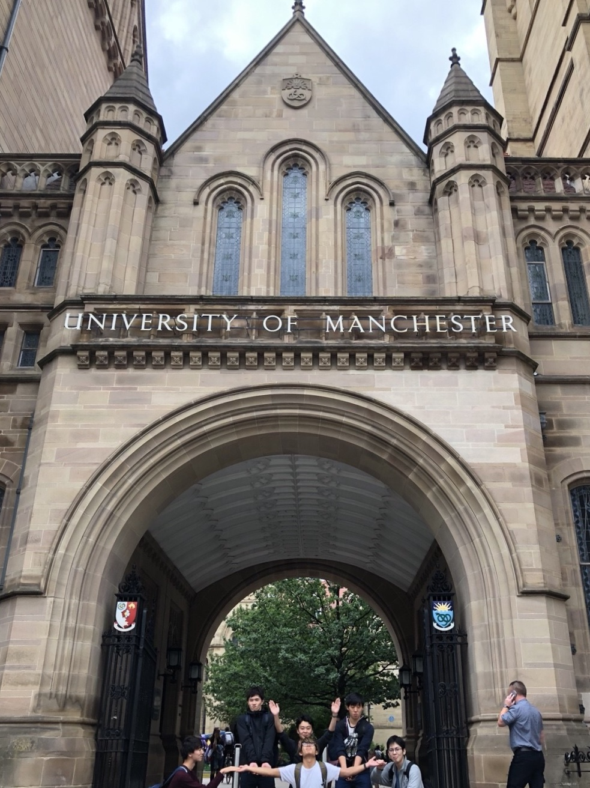

主に三つあります。
一つ目は、留学の種類が豊富であることです。
僕は、一年生の夏休み中の一か月だけイギリスにいきました。
自分が通っている大学から飛び出して、国をまたいで、別の大学で学ぶことは、自身が普段置かれている状況を俯瞰的にみれるいいきっかけになった。

お世話になったマンチェスター大学
二つ目は、ファブラボで頭の中で想像したことを形にできることです。
初めてレーザーカッターで自分が書いた線通りにMDFがきれたときは
興奮しました。
三つめは、外部で働く方の授業があることです。
例えば二年次後期に履修した銀行業務論です。
どうやって銀行員の人が仕事しているかだけでなく景気ってそもそも何なのか。など幅広く知識を得ることができました。
授業の内容についてが一番大きい不満です。例えば
ただ教科書を読んでいるだけの授業がある！！
ほかにも
内容が大きくかぶっていることがある(仕方ないかも)